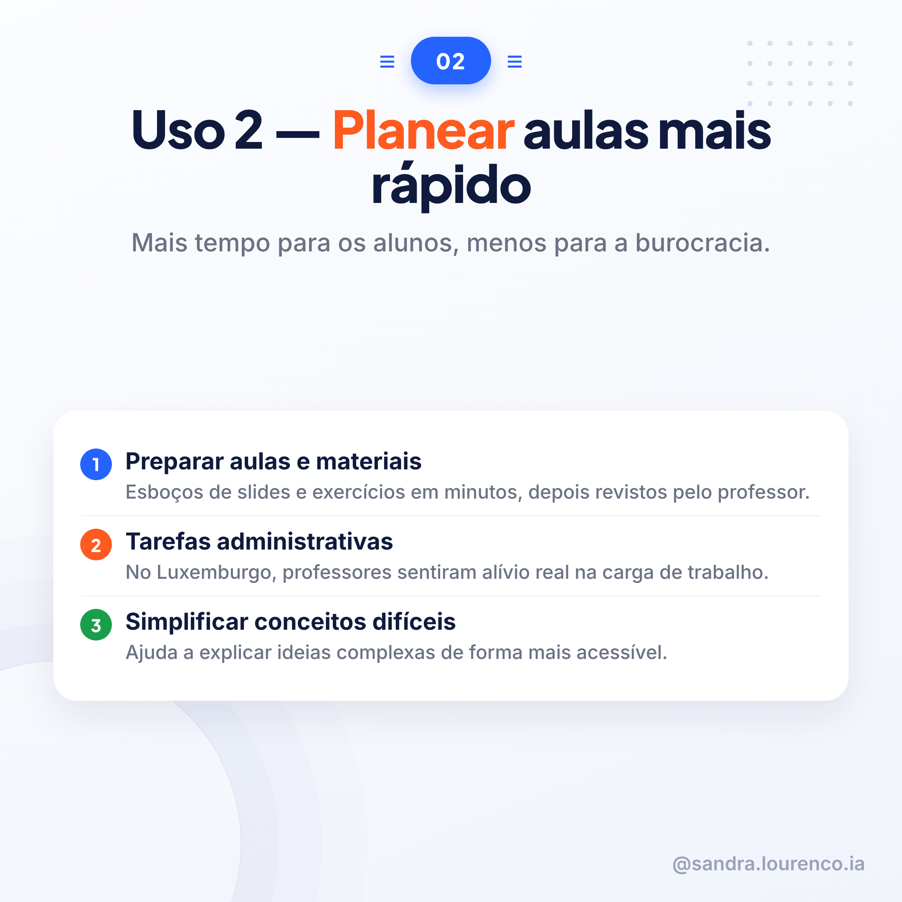
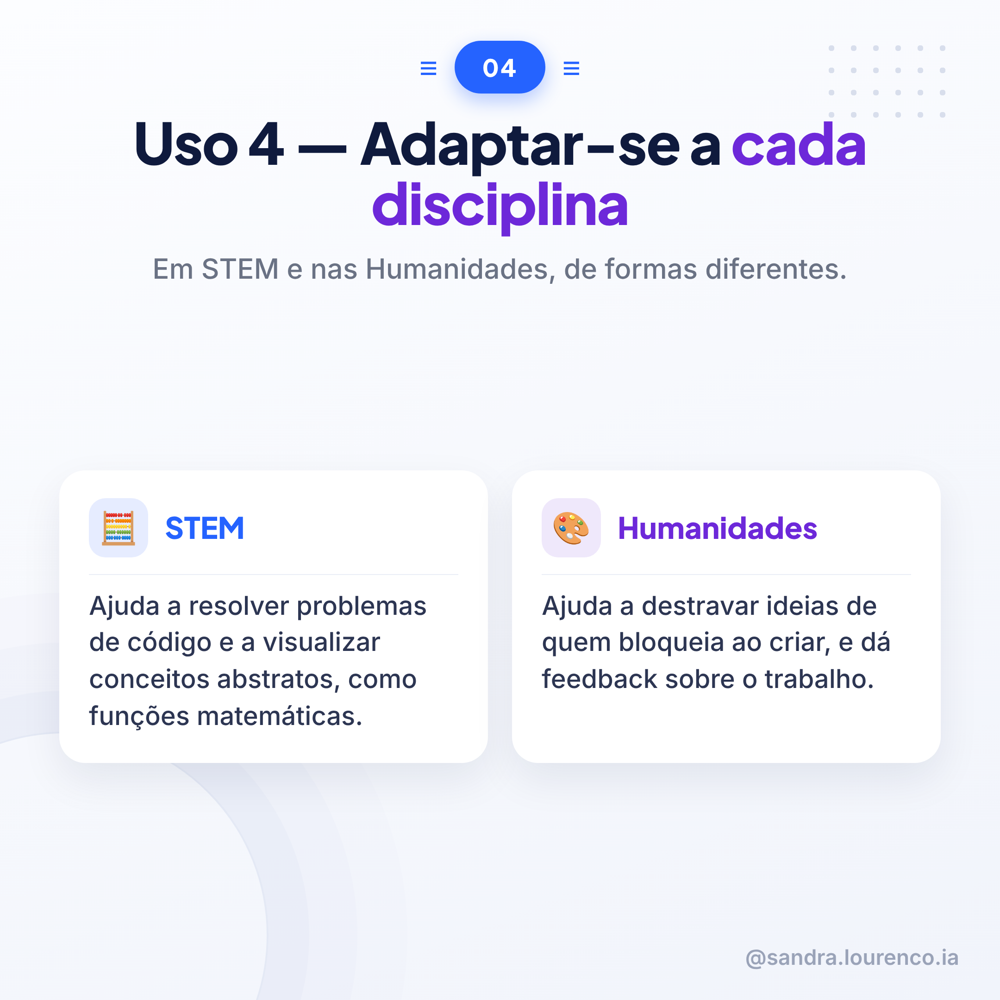

Ter 10/11Tema: EducaçãoFonte: JRC — IA generativa no básico e secundário (UE)
8 slides prontos, legendas para LinkedIn e TikTok/Instagram, e guião de vídeo para o HeyGen. Tudo com botão de copiar — pronto para publicares quando quiseres.
Slides
8 imagens · ordem de publicação
1 · Capa
2 · Uso 1

3 · Uso 2
4 · Uso 3

5 · Uso 4
6 · O estudo
7 · Cuidados
8 · Fecho
Legendas e guião
3 textos · prontos a colar
LinkedIn
Quando se fala em IA generativa nas escolas, a conversa salta logo para os riscos. Faz sentido. Mas há um estudo recente da Comissão Europeia que mostra o outro lado: o que professores e alunos já estão mesmo a fazer com estas ferramentas, no dia a dia.
O Joint Research Centre ouviu 121 pessoas em cinco países da UE (Finlândia, Alemanha, Irlanda, Luxemburgo e Espanha): professores, alunos, diretores escolares e decisores políticos. E os usos que foram surgindo repetem-se de país para país.
Primeiro, personalizar a aprendizagem. Na Irlanda, um professor criou uma ferramenta para ajudar um aluno difícil de motivar a começar a escrever. Em Espanha, trocar um poema clássico por uma letra de rap, se for isso que prende a atenção.
Segundo, planear aulas mais depressa. No Luxemburgo, professores sentiram um alívio real na carga de trabalho administrativo.
Terceiro, apoiar a avaliação. Um professor de História, na Irlanda, dita notas de viva voz e usa a IA para as organizar em feedback construtivo para os alunos.
Quarto, adaptar-se a cada disciplina. Em STEM, ajuda a formular problemas de código e a visualizar conceitos abstratos. Nas Humanidades, ajuda a destravar quem bloqueia perante a folha em branco.
Nada disto substitui o professor. O próprio estudo é claro: a verificação humana continua obrigatória, o pensamento crítico dos alunos não pode ser delegado, e a relação entre colegas pode sofrer se o uso for excessivo.
Fonte: "Generative Artificial Intelligence in Secondary Education", Joint Research Centre (Comissão Europeia), 2025.
#InteligenciaArtificial #Educacao #Professores
TikTok / Instagram
Sabes o que professores e alunos de 5 países europeus já estão mesmo a fazer com IA generativa nas escolas?
Um estudo da Comissão Europeia ouviu 121 pessoas e encontrou 4 usos que se repetem:
Personalizar a aprendizagem. Planear aulas mais depressa. Apoiar a avaliação e o feedback. E adaptar-se a cada disciplina, de forma diferente em STEM e nas Humanidades.
Mas atenção: nada disto substitui o professor. A IA ajuda. A decisão continua a ser humana.
Desliza e guarda os 4 usos.
#InteligenciaArtificial #Educacao #Professores
Guião de vídeo (HeyGen)
Cena 1 — Gancho
Sabes o que professores e alunos de cinco países europeus já estão mesmo a fazer com inteligência artificial generativa nas escolas?
Cena 2 — Conteúdo (personalizar)
Um estudo da Comissão Europeia ouviu cento e vinte e uma pessoas em cinco países. O primeiro uso que encontraram foi personalizar a aprendizagem. Na Irlanda, um professor criou uma ferramenta só para motivar um aluno difícil de envolver.
Cena 3 — Conteúdo (planear)
O segundo uso é planear aulas mais depressa. No Luxemburgo, os professores sentiram um alívio real na carga de trabalho administrativo.
Cena 4 — Conteúdo (avaliar)
O terceiro uso é apoiar a avaliação. Na Irlanda, um professor de História dita notas em voz alta e usa a inteligência artificial para as organizar em feedback para os alunos.
Cena 5 — Conteúdo (adaptar e cuidado)
O quarto uso é adaptar-se a cada disciplina, de forma diferente em ciências e em humanidades. Mas atenção: nada disto substitui o professor. A verificação humana continua obrigatória.
Cena 6 — Fecho e chamada à ação
Guarda este carrossel com os quatro usos e segue para mais conteúdos sobre inteligência artificial na educação.
— — —
Nota para o HeyGen: usar os PNGs do carrossel (carrossel_21_s1.png a carrossel_21_s8.png) como fundo de cada cena, pela ordem, com o avatar a narrar por cima.